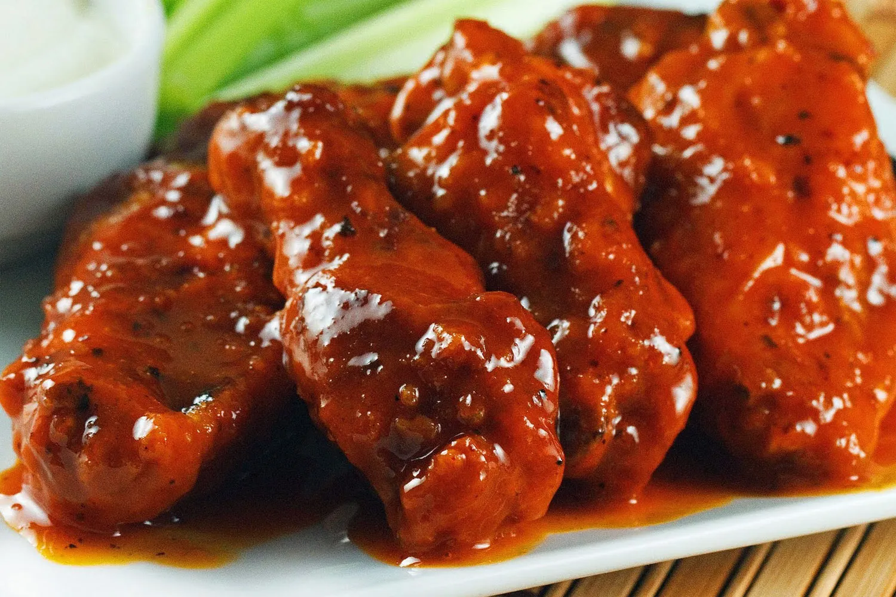

Alitas de pollo picantes

Las alitas de pollo picantes son un clásico de la comida estadounidense y también una de las protagonistas habituales de los retos gastronómicos. Esta versión combina alitas crujientes con una salsa picante, dulce y ligeramente ácida. Puedes ajustar la cantidad de picante según tu tolerancia y convertirlas en una receta normal o en un verdadero desafío.